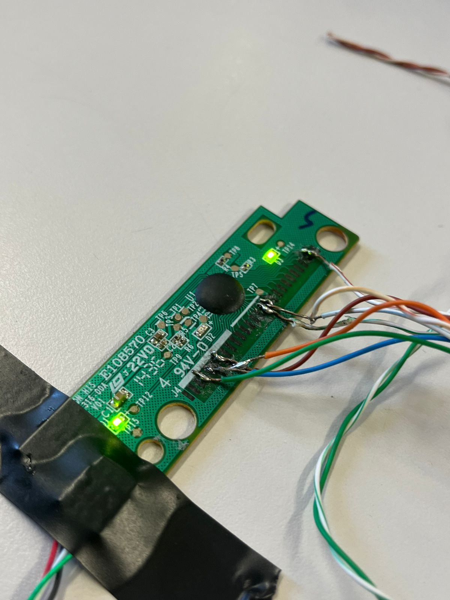
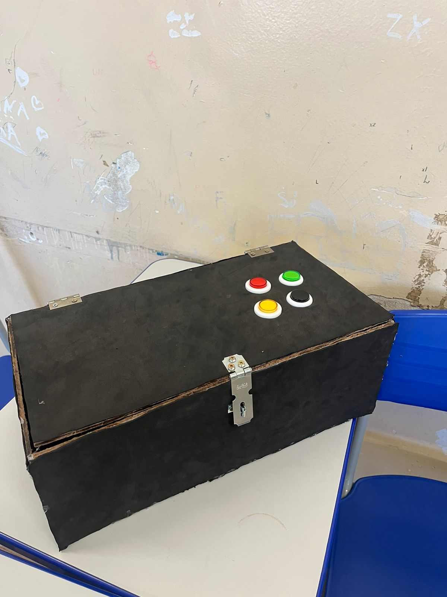

Fotos do Projeto



O projeto inicialmente concebido como um controle arcade personalizado a partir de uma placa de teclado logo se deparou com inúmeras dificuldades técnicas. A adaptação da placa de teclado para atender às necessidades de um controle arcade revelou-se um desafio complexo. No entanto, com determinação e perseverança, a equipe de desenvolvimento não desistiu. Em vez disso, surgiu uma nova e promissora ideia: utilizar a placa de um controle USB. Essa mudança de abordagem abriu possibilidades empolgantes para o projeto, oferecendo maior compatibilidade e flexibilidade. O projeto agora está em um estágio emocionante de desenvolvimento, explorando o potencial de criar um controle arcade personalizado que proporcionará uma experiência de jogo única para os entusiastas de jogos de computador.
Lucas, Felipe Souza, Felipe Silva, Matheus Izac e Pedro